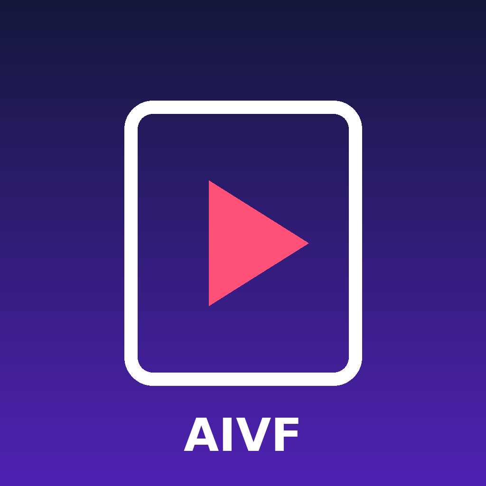

GadgetLab AI Video Factory is a private, self-hosted tool used by GadgetLab to turn a short text idea into a vertical promotional video and publish it to GadgetLab's own TikTok account.
The owner sends an idea by Telegram. The tool generates a still image and a short AI video from it, writes a caption, and posts the video to the connected TikTok account, labelled as AI-generated content. The tool is used only by its owner. It is not offered to the public.